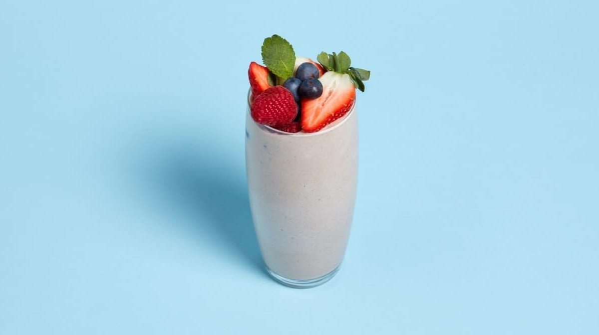
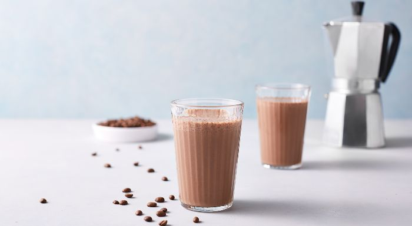
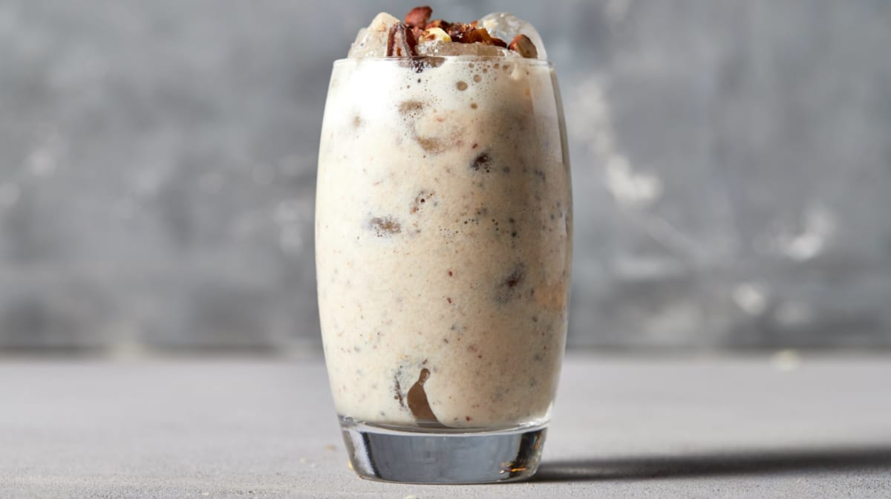

RECETAS
Smoothie proteico de frutas
Con esta maravillosa receta conseguirás un delicioso y nutritivo smoothie de frutas alto en proteína ideal para el desayuno. Mezcla nuestra Impact Whey Protein con leche y fruta fresca para empezar bien el día. Preparación: Simplemente mezcla todos los ingredientes, sirve en un vaso y disfruta.
| # | Ingredientes: | |
|---|---|---|
| 1 | 250 ml de leche | |
| 2 | 1 scoop de Whey Protein | |
| 3 | 1 plátano | |
| 4 | 1 yogur | |
| 5 | 1 puñado de mezcla de bayas congeladas | |
Batido de chocolate y café
Este delicioso batido de proteínas es el batido perfecto para el desayuno, gracias a su alto contenido de proteínas y una generosa dosis de café para empezar el día con energía. Preparación: Vierte todos los ingredientes en el vaso de la batidora y bate a máxima potencia hasta que quede todo bien mezclado. Si quieres una textura más cremosa, puedes añadir unos cubitos de hielo y seguir batiendo hasta conseguir la textura deseada.
| # | Ingredientes: | |
|---|---|---|
| 1 | 200 ml de leche | |
| 2 | 100 ml de café preparado | |
| 3 | 1 scoop (30 g) de Whey Protein (sabor Chocolate) | |
| 4 | 100 g de plátano | |
Batido vegano proteico
Este smoothie es perfecto para esas mañanas en las que no tienes tiempo de prepararte una comida y, además, puedes hacerlo vegano o no, dependiendo de tu tipo de dieta. Preparación: Simplemente, vierte todos los ingredientes en la batidora y bate hasta conseguir una mezcla suave. Vierte la mezcla en un vaso y añade por encima los dátiles y avellanas troceados.
| # | Ingredientes: | |
|---|---|---|
| 1 | 200 ml de leche de almendras o leche sin lactosa | |
| 2 | 1 cucharada de copos de avena | |
| 3 | 2 dátiles picados | |
| 4 | 1 puñado de avellanas | |
| 5 | 1 scoop de Whey Protein | |
| 6 | 1 cucharadita de Semillas de Chía | |
| 7 | Una pizca de sal marina | |